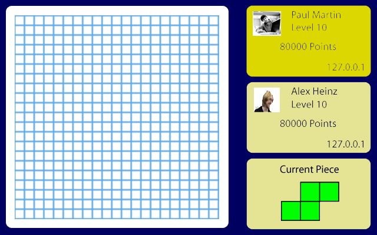

Petri is a Mac OS X application based on the pen-and-paper game “fungus,” in which two or more fungus-like organisms vie for territory control in a grid-like petri dish. Players take turns placing randomly-generated one- to five-cell pieces in the dish, attempting to surround regions of the opponent’s fungus on two sides, to capture territory and, eventually, eliminate their opponents from the dish.
Fungus is typically played on a variable-sized square grid, called the “dish.” When the game begins, the dish is empty, save for one cell controlled by each of the players in the game, spread around the dish (usually near the corners.) The starting cell is known as the player’s “head,” and if it is captured or killed (see below) the corresponding player is eliminated from the game. Gameplay proceeds in turns; a typical turn is described below. Note that this description represents gameplay under normal fungus rules, and that variations may apply.
When the player’s turn begins, he or she is given a “piece,” initially off the board, awaiting placement. Pieces consist of arrangements of cells, and can occupy any of the following:
Before placing the piece, if the player has any “bites,” he or she may use them to attack an opponent. Bites are accumulated over time, or can be picked up from certain, marked locations in the dish. Bites work as follows:
Players may use any number of bites in one turn, provided they have enough, but they may not bite after they have placed their piece.
The player attempts to place the piece he or she has been given at a location in the dish. The player may rotate (but not flip) the piece before placing it, but the piece may only be placed at a location fitting the following requirements:
Placed pieces are added to the player’s territory, and when the piece is placed, the player’s turn ends. If the player cannot place the piece, he or she may choose to skip his or her turn.

Model: Each game is represented by an encapsulated model object, which is attached to the controller and view via a listener pattern that uses Objective-C’s key-value observation patterns. During network games, the application acting as the game’s host holds the model objects, and presents them to the client applications via Cocoa’s Distributed Objects API.
Controller/View: The view presents the model to the user via a board, pieces and player icons rendered as CoreAnimation layers, with Quartz Composer animations for the contents of the cells of the board, giving them a shifting organic appearance. Player input is handled with drag-and-drop actions.
This page uses the Perfect 'Left Menu' 2 Column Liquid Layout by Matthew James Taylor.